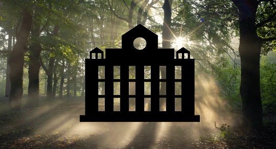
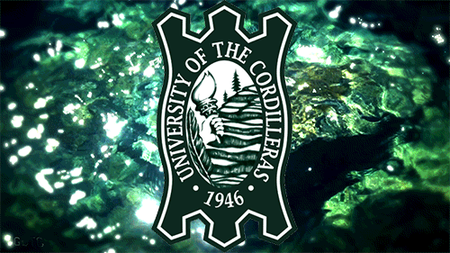

UC HYMN LYRICS
Composer: Dr. Rodolfo Cornejo

Hold high the torch;
Let its blaze reach all corners,
Throughout the world
to lighten the course of darkness.
Keep wise and well not forgetting fidelity,
To our Alma Mater, wherever we may be
Keep our hearts together with glowing
love and loyalty.
Hold tight the shield,
And defend our dear country
We must not yield
To threats made upon our safety.
This is the pledge
We shall keep till our dying day.
To our Alma Mater, wherever we may be
Keep our hearts together
With glowing love and loyalty.
UC MARCH LYRICS
Composer: Dr. Rodolfo Cornejo

Up the zigzag road, you will find your way
Leading to the gate of learning,
Give the place some thought, you can't go astray
There is where you'll hear them singing
*** Neath the tall and stalwart pine trees
Our Alma Mater proudly stands;
Over hill and over valleys with full command upon the strand
There is where my mind is nourished
With the wisdom that I need
There is where I reap some knowledge
My heart to strengthen my creed.
***
Hear the murmur of those pine trees
Feel the softness of mountain breeze
If you have some ambition
The right inspiration, you'll find in the Baguio Colleges
(Repeat ***)
Meaning

The rice terraces, often called the eighth wonder of the world, is a symbol of the genius of our race. They show the industry, patience and skill of the early Filipinos in this part of the highlands where UC is situated.
The leaves of the pine tree, an evergreen, denote youth and its fresh and courageous outlook.
The torch, the classical symbol of learning, means that while UC is dedicated to the cultivation of a distinct Filipino culture, it has profited from the teachings of other cultures.
The shield implies that education, the birthright of everyone, is a protection against the inadequacy, intolerance, and slavery of the mind.